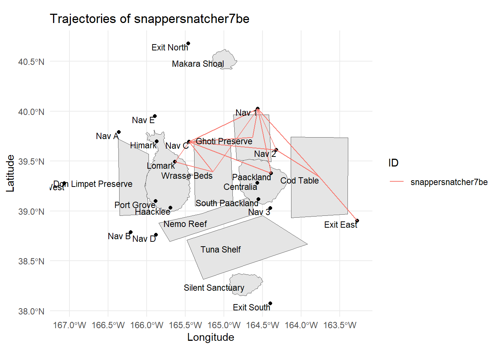

Code
pacman::p_load( sf , leaflet,ggplot2,dplyr,tmap,jsonlite,igraph,tidyverse,lubridate,plotly,ggraph)FishEye analysts need help in performing geographic and temporal analysis of the CatchNet data to prevent future illegal fishing incidents. Additionally, they seek insights into the flow of commercially caught fish through Oceanus’s ports, despite having mistakenly acquired port-exit records instead of ship off-load records. The task is to develop visual analytics tools to associate vessels with their probable cargos, identify suspicious fishing behavior of SouthSeafood Express Corp, and discover other vessels engaging in similar activities.
Mini Challenge 2 Details : https://vast-challenge.github.io/2024/MC2.html
Illegal, unreported and unregulated (IUU) fishing is a broad term that captures a wide variety of fishing activity.
Illegal fishing: fishing in prohibited areas, catching protected species, and exceeding catch limits or quotas
Unreported fishing: catching fish that are not documented or reported to the relevant authorities
Unregulated fishing: fishing activities take place without adequate regulatory oversight or management measures in place
I will be trying to answer the below questions:
pacman::p_load( sf , leaflet,ggplot2,dplyr,tmap,jsonlite,igraph,tidyverse,lubridate,plotly,ggraph)Loading the mc2 json data which is a directed multigraph consisting of nodes containing entities and edges containing relationships
json_data <- fromJSON("data/mc2.json")nodes_df <- as_tibble(json_data$nodes)
links_df <- as_tibble(json_data$links)We are doing the analysis mostly on Fishing and Cargo Vessels
vessels_df <- nodes_df %>%
filter(type == "Entity.Vessel.FishingVessel" | type == "Entity.Vessel.Ferry.Cargo" | type == "Entity.Vessel.CargoVessel") %>%
select(id, Name, company, flag_country, type) %>%
mutate(type = sub("Entity.Vessel.", "", type))
delivery_report_df <- nodes_df %>%
filter(type == "Entity.Document.DeliveryReport") %>%
rename(cargo_id = id)%>%
select(qty_tons,date,cargo_id)
fish_df <- nodes_df %>%
filter(type == "Entity.Commodity.Fish") %>%
rename(fish_name = name)
city_df <- nodes_df %>%
filter(type == "Entity.Location.City")%>%
rename(city_name = Name)
locations_df <- nodes_df %>%
filter(type == "Entity.Location.City"| type=="Entity.Location.Point"| type=="Entity.Location.Region") %>%
rename(location_name = Name)%>%
select(id,location_name)
harbor_report_df <- links_df %>%
filter(type == "Event.HarborReport") %>%
select(date,source,target)
transponder_ping_df <- links_df %>%
filter(type == "Event.TransportEvent.TransponderPing") %>%
select(time,dwell,source,target)
transactions_df <- links_df %>%
filter(type == "Event.Transaction") %>%
select(date,source,target)
fishing_grounds_df <- nodes_df %>%
filter(kind == "Fishing Ground"|kind == "Ecological Preserve") %>%
select(id,Name,kind,fish_species_present)# Initial cleaning and splitting of fish species data
fishing_grounds_df <- fishing_grounds_df %>%
mutate(fish_species_present = gsub("c[(]", "", fish_species_present)) %>%
mutate(fish_species_present = gsub("\"", "", fish_species_present)) %>%
mutate(fish_species_present = gsub("[)]", "", fish_species_present)) %>%
mutate(fish_species_present = strsplit(as.character(fish_species_present), ",\\s*")) %>%
unnest(fish_species_present) %>%
rename(fishing_location = Name)
# Group by fish species and collect all unique locations into a list
final_fish_locations_df <- fishing_grounds_df %>%
group_by(fish_species_present) %>%
summarise(fishing_locations = list(unique(fishing_location)), .groups = 'drop')
ggplot(fishing_grounds_df, aes(x = fishing_location, y = fish_species_present, fill = kind)) +
geom_tile(color = "white") +
scale_fill_manual(values = c("Ecological Preserve" = "lightblue", "Fishing Ground" = "lightgreen")) +
labs(title = "Fish Distribution in Fishing Locations",
x = "Fishing Location",
y = "Fish Species",
fill = "Location Type") +
theme_minimal() + theme(panel.grid.major = element_blank(),
panel.grid.minor = element_blank())+
theme(axis.text.x = element_text(angle = 90, vjust = 0.25, hjust=0.25))Plot above shows the locations in which various fish varieties are found. Fishing is supposed to be done only in the designated fishing grounds and not in ecological preserves
Insights: There are some fishes like Sockfish/Pisces foetida,Helenaa/Pisces satis, Offidiaa/Piscis osseus which are found only in ecological preserves. So tracking fishing of these varieties can give leads to illegal fishing happening.
# Convert date columns to Date type
transactions_df$date <- as.Date(transactions_df$date)
harbor_report_df$date <- as.Date(harbor_report_df$date)
delivery_report_df$date <- as.Date(delivery_report_df$date)
# Performing the inner join to pick only fishing or cargo vessels
harbor_report_df <- inner_join(harbor_report_df, vessels_df, by = c("source" = "id")) %>%
rename(
vessel_name = Name,
vessel_company = company,
vessel_id=source,
city=target,
vessel_type=type
) %>%
select(date,vessel_id,city,vessel_name,vessel_type,vessel_company,flag_country)
transponder_ping_df <- inner_join(transponder_ping_df, vessels_df, by = c("target" = "id"))%>%
mutate(date = as.Date(as.POSIXct(time, format="%Y-%m-%dT%H:%M:%OS", tz="UTC")))%>% mutate(time = as.POSIXct(time, format="%Y-%m-%dT%H:%M:%OS", tz="UTC"))%>%
rename(
location = source,
vessel_id = target,
vessel_name = Name,
vessel_company = company,
vessel_type=type
) %>%
select(time,date,dwell,location,vessel_id,vessel_name,vessel_type,vessel_company,flag_country)
# Group by date, vessel_id, and city, and sum up dwell time
transponder_ping_day_sum_df <- transponder_ping_df %>%
group_by(date, vessel_id, location,vessel_name,vessel_type,vessel_company) %>%
summarise(total_dwell_time = sum(dwell, na.rm = TRUE), .groups = 'drop') %>%
# Add filter to exclude records where total_dwell_time is 0
filter(total_dwell_time != 0)
transponder_ping_city_df <- transponder_ping_day_sum_df %>%
filter(grepl("^City", location))
transponder_ping_non_city_df <- transponder_ping_day_sum_df %>%
filter(!grepl("^City", location))
transponder_ping_south_df <- transponder_ping_day_sum_df %>%
filter(grepl("^SouthSeafood Express Corp", vessel_company))
# preparing transactions
transactions_df<-transactions_df%>% rename(cargo_id = source)
#pivot fish and city as columns
city_and_fish_df <- bind_rows(city_df, fish_df)
transactions_type <- transactions_df %>%
left_join(city_and_fish_df, by = c("target" = "id")) %>%
select(date.x, cargo_id, target, type)
transactions_cargo <- transactions_type %>%
pivot_wider(names_from = type, values_from = target, id_cols = c(date.x, cargo_id))%>%
rename(
date=date.x,
fish = Entity.Commodity.Fish,
city = Entity.Location.City
)
transactions_cargo <- transactions_cargo %>%
left_join(fish_df, by = c("fish" = "id")) %>%
select(date.x, cargo_id, fish, city,fish_name)%>%
rename(date_of_arrival=date.x,
city_of_arrival=city,
fish_in_cargo=fish
)
transactions_cargo <- transactions_cargo %>%
left_join(delivery_report_df, by = c("cargo_id"="cargo_id","date_of_arrival" = "date")) %>%
select(date_of_arrival,cargo_id, fish_in_cargo, city_of_arrival,fish_name,qty_tons)iqr_qty <- IQR(transactions_cargo$qty_tons)
upper_bound <- quantile(transactions_cargo$qty_tons, 0.75) + 1.5 * iqr_qty
outliers <- transactions_cargo[transactions_cargo$qty_tons > upper_bound, ]
# Create a histogram
hist(transactions_cargo$qty_tons)
# Add outliers as points
points(transactions_cargo$qty_tons[transactions_cargo$qty_tons > upper_bound],
rep(0, sum(transactions_cargo$qty_tons > upper_bound)),
col = "red", pch = 16)Insight : Anomaly qty_tons are mostly greater than 70 tons
monthly_data <- transactions_cargo %>%
mutate(month = format(date_of_arrival, "%Y-%m"))
# Convert month to Date type for proper ordering in ggplot2
monthly_data$month <- as.Date(paste0(monthly_data$month, "-01"))
# Group by month and fish_name, and summarize total quantity in tons
monthly_data <- monthly_data %>%
group_by(month, fish_name) %>%
summarize(total_qty = sum(qty_tons)) %>%
ungroup()
# Plot the data
p <- ggplot(monthly_data, aes(x = month, y = total_qty, color = fish_name, group = fish_name)) +
geom_line() +
labs(title = "Monthly Fish Transactions", x = "Month", y = "Quantity in Tons")
ggplotly(p)Insights:
city_time_analysis <- transactions_cargo %>%
mutate(month_of_arrival = format(date_of_arrival, "%Y-%m"))
# Convert month to Date type for proper ordering in ggplot2
city_time_analysis$month_of_arrival <- as.Date(paste0(city_time_analysis$month_of_arrival, "-01"))
# Group by month and fish_name, and summarize total quantity in tons
city_time_analysis <- city_time_analysis %>%
group_by(month_of_arrival,city_of_arrival,fish_name) %>%
summarize(total_qty = sum(qty_tons)) %>%
ungroup()
# Example endangered fish list
endangered_fish <- c(" Helenaa/Pisces satis", "Offidiaa/Piscis osseus","Sockfish/Pisces foetida")
# Generate a color palette, highlighting endangered species
fish_colors <- ifelse(city_time_analysis$fish_name %in% endangered_fish, "red", "grey") # This creates a vector of 'red' or 'grey'
unique_fish <- unique(city_time_analysis$fish_name)
colors <- setNames(ifelse(unique_fish %in% endangered_fish, "red", "grey"), unique_fish)
# Add a custom color scale to the plot
p <- ggplot(city_time_analysis, aes(x = month_of_arrival, y = total_qty, fill = fish_name)) +
geom_bar(stat = "identity", position = "stack") +
scale_fill_manual(values = colors) +
facet_wrap(~ city_of_arrival, scales = "free_y") +
labs(title = "Fish Arrivals by City Over Time", subtitle = "Red highlights endangered species",
x = "Month of Arrival", y = "Total Quantity in Tons") +
theme(axis.text.x = element_text(angle = 45, hjust = 1),
legend.title = element_text(face = "bold"))
# Convert to an interactive plotly plot
interactive_plot <- ggplotly(p)
interactive_plot <- interactive_plot %>%
layout(
hoverlabel = list(bgcolor = "white"),
hoverinfo = "text",
tooltip = c("month_of_arrival", "qty_tons", "fish_name")
)
interactive_plot# List of ecological preserves
preserve_loc <- c("Ghoti Preserve", "Nemo Reef", "Don Limpet Preserve")
# Summing dwell times by location and preserve status
loc_vessel_dwell_time_sum <- transponder_ping_df %>%
group_by(location) %>%
summarise(total_dwell_time = sum(dwell), .groups = 'drop') %>%
mutate(preserve_status = ifelse(location %in% preserve_loc, "Preserve", "Non-Preserve"))
# Plotting with only preserve status
p <- ggplot(loc_vessel_dwell_time_sum, aes(y = location, x = total_dwell_time, fill = preserve_status)) +
geom_bar(stat = "identity", position = "stack") +
scale_fill_manual(values = c("Preserve" = "#FF6666", "Non-Preserve" = "#6666FF")) +
labs(title = "Total Dwell Time by Location",
y = "location",
x = "Total Dwell Time") +
theme_minimal() +
theme(axis.text.x = element_text(angle = 45, hjust = 1))
# Convert to an interactive plotly plot
ggplotly(p)Insights:
Fishing and Vessels seem to be spending considerable time in ecological preserves which needs to be investigated
# List of ecological preserves
preserve_loc <- c("Ghoti Preserve", "Nemo Reef", "Don Limpet Preserve")
# Summing dwell times by city and preserve status
loc_vessel_dwell_time_sum <- transponder_ping_df %>%
group_by(location,vessel_type) %>%
summarise(total_dwell_time = sum(dwell), .groups = 'drop')
# Create the ggplot
p <- ggplot(loc_vessel_dwell_time_sum, aes(y = location, x = total_dwell_time, fill = vessel_type)) +
geom_bar(stat = "identity", position = "stack") +
labs(title = "Total Dwell Time by location", y = "location", x = "Total Dwell Time") +
theme_minimal() +
theme(legend.position = "bottom",
axis.text.x = element_text(angle = 0, hjust = 0.5))
# Print the ggplot
print(p)Insights:
Fishing Vessels more than cargo vessels seem to be spending considerable time in ecological preserves which needs to be investigated
threshold <- mean(transactions_cargo$qty_tons) + 3 * sd(transactions_cargo$qty_tons)
anomalies <- transactions_cargo[transactions_cargo$qty_tons > threshold, ]
anomalies <- anomalies %>%
mutate(month = format(date_of_arrival, "%Y-%m"))
# Group anomalies by city_of_arrival, month, and fish_in_cargo, then count the number of anomalies
anomalies_per_city_month_fish <- anomalies %>%
group_by(city_of_arrival, month, fish_name) %>%
summarise(Anomaly_Count = n()) %>%
ungroup()
# Ensure data is arranged
filtered_data <- anomalies_per_city_month_fish %>%
arrange(city_of_arrival, month)
# Create the Plotly plot with initial markers
plot <- plot_ly() %>%
add_bars(data = filtered_data, x = ~month, y = ~Anomaly_Count, color = ~fish_name,
type = 'bar', hoverinfo = 'text', text = ~paste("City: ", city_of_arrival, "<br>Month: ", month, "<br>Fish in Cargo: ", fish_name, "<br>Anomaly Count: ", Anomaly_Count),
showlegend = FALSE)
# Add bars for each city and set initial visibility to FALSE
cities <- unique(filtered_data$city_of_arrival)
for (city in cities) {
city_data <- filtered_data[filtered_data$city_of_arrival == city, ]
plot <- plot %>%
add_bars(data = city_data, x = ~month, y = ~Anomaly_Count, color = ~fish_name,
name = city, visible = FALSE, hoverinfo = 'text', text = ~paste("City: ", city_of_arrival, "<br>Month: ", month, "<br>Fish in Cargo: ", fish_name
#, "<br>Anomaly Count: ", Anomaly_Count
),
showlegend = FALSE)
}
# Create dropdown buttons for each city
buttons <- lapply(cities, function(city) {
visibility <- lapply(cities, function(c) c == city)
text_update <- lapply(cities, function(c) {
if (c == city) {
filtered_city_data <- filtered_data[filtered_data$city_of_arrival == city, ]
text <- ~paste("City: ", filtered_city_data$city_of_arrival,
#"<br>Month: ", filtered_city_data$month,
"<br>Fish in Cargo: ", filtered_city_data$fish_name
#, "<br>Anomaly Count: ", filtered_city_data$Anomaly_Count
)
} else {
text <- ""
}
text
})
list(
method = "update",
args = list(
list(visible = visibility, text = text_update),
list(title = paste("Anomalies per Month by Fish in Cargo in", city))
),
label = city
)
})
# Add layout settings with dropdown menu
plot <- plot %>%
layout(title = "Anomalies per City per Month by Fish in Cargo",
xaxis = list(title = "Month"),
yaxis = list(title = "Anomaly Count"),
hovermode = 'closest',
barmode = "stack",
updatemenus = list(
list(
type = "dropdown",
direction = "down",
buttons = buttons
)
)
)
# Display the plot
plotInsights:
This plot helps to do the first level of investigation in terms of anomaly cargo arriving in each city and paves way for further investigation
# Aggregate quantity by city, fish type, and month of arrival (assuming you have a date_of_arrival column)
city_time_analysis <- transactions_cargo %>%
mutate(month_of_arrival = lubridate::floor_date(date_of_arrival, "month")) %>%
group_by(city_of_arrival, fish_name, month_of_arrival) %>%
summarize(qty_tons = sum(qty_tons), .groups = 'drop')
# Plot with ggplot2
p <- ggplot(city_time_analysis, aes(x = month_of_arrival, y = qty_tons, fill = fish_name)) +
geom_bar(stat = "identity", position = "stack") +
facet_wrap(~ city_of_arrival, scales = "free_y") +
labs(title = "Fish Arrivals by City Over Time", x = "Month of Arrival", y = "Total Quantity in Tons") +
theme(axis.text.x = element_text(angle = 45, hjust = 1))
# Convert to an interactive plotly plot
ggplotly(p)Insights:
# Aggregate dwell time by month, city, and vessel_id
dwell_time_by_month_city_vessel <- transponder_ping_df %>%
filter(vessel_company == "SouthSeafood Express Corp") %>%
mutate(month = format(date, "%Y-%m")) %>%
group_by(month, location, vessel_id) %>%
summarise(monthly_dwell_time = sum(dwell), .groups = 'drop')
# Plotting with faceting by vessel_id
p2 <- ggplot(dwell_time_by_month_city_vessel, aes(y = month, x = monthly_dwell_time, fill = location)) +
geom_bar(stat = "identity", position = "dodge") +
facet_wrap(~vessel_id, scales = "free_y") + # Free scales can be set if necessary
labs(title = "Monthly Dwell Time by City for Company A, by Vessel",
y = "Month",
x = "Dwell Time") +
theme_minimal() +
theme(legend.position = "bottom",axis.text.x = element_text(angle = 90, hjust = 1),
strip.text.x = element_text(angle = 0, hjust = 0.5, size = 8)) # Adjust strip text for better readability
ggplotly(p2)Insights:
SouthSeafood Express Corp seems to have been caught in the month of May as transponder pings stops at May
Vessel snappersnatcher7be seems to have spent considerable time in ecological preserve ‘ghoti preserve’ in april and in wrasse beds in april. The common fish present in both locations in Wrasse.
ggplot(transponder_ping_south_df, aes(x = date, y = location, fill = total_dwell_time)) +
geom_tile(color = "white") + # Adds borders to each tile
scale_fill_gradient(low = "lightblue", high = "darkblue", name = "Dwell Time") + # Color gradient
facet_wrap(~ vessel_id, ncol = 1, scales = "free_y")+
labs(title = "Heatmap of Vessel Location Dwell Times", x = "Date", y = "Location") +
theme_minimal() +
theme(
axis.text.x = element_text(angle = 90, hjust = 1), # Rotate date labels for clarity
axis.title = element_text(size = 12, face = "bold")
)
Insight:
Vessels seem to be spending time in exit east as well Himark and Lomark.
Lets investigate the consistent increase in arrival of Wrasse fish in Himark.
Wrasse is found in Ghoti Preserve,Nemo Reef and Wrasse beds and thats where vessels of SouthSeafood Express Corp spent most of the dwell time
# Set hardcoded values
hardcoded_city <- "City of Himark"
hardcoded_fish <- "labridaenrefert9be"
hardcoded_month <- "2035-02-01" # Use the format YYYY-MM to match with floor_date
# Filter for the specific city, fish, and month
filtered_data <- transactions_cargo %>%
filter(city_of_arrival == hardcoded_city, fish_in_cargo == hardcoded_fish) %>%
mutate(day_of_arrival = floor_date(date_of_arrival, "day")) %>%
filter(day_of_arrival >= as.Date(hardcoded_month) & day_of_arrival < as.Date(hardcoded_month) %m+% months(1)) %>%
group_by(day_of_arrival) %>%
summarize(qty_tons = sum(qty_tons), .groups = 'drop')
# Plot with ggplot2
p <- ggplot(filtered_data, aes(x = day_of_arrival, y = qty_tons, fill = hardcoded_fish)) +
geom_bar(stat = "identity", position = "stack") +
labs(title = paste("Daily Fish Arrivals in", hardcoded_city, "for", hardcoded_fish),
x = "Day of Arrival", y = "Total Quantity in Tons") +
theme(axis.text.x = element_text(angle = 45, hjust = 1))
# Convert to an interactive plotly plot
ggplotly(p)Insights:
Lets pick the day with highest arrival quantity ie Feb 12
Below logic looks for Transhipment possibilities. So it looks for vessels which have visited the same locations as the suspected vessel in the vicinity of the suspected transaction and also arrived at the suspected port one day before the suspected transaction.
#logic to zero in on potential transshipment vessels
# Hardcoded parameters
hardcoded_vessel_id <- "snappersnatcher7be"
date_from <- as.Date("2035-02-01")
date_to <- as.Date("2035-02-06")
target_location <- "City of Himark"
daily_vessel_locations_list <- transponder_ping_day_sum_df %>%
group_by(date, vessel_id) %>%
summarise(ping_locations = list(unique(location)), .groups = 'drop')%>% rename(date_of_ping=date)
# Gather location data for the specified vessel within the date range
vessel_data <- daily_vessel_locations_list %>%
filter(vessel_id == hardcoded_vessel_id,
date_of_ping >= date_from,
date_of_ping <= date_to) %>%
pull(ping_locations) %>%
unlist() %>%
unique()
# Find other vessels sharing any location with the hardcoded vessel within the same date range
shared_location_vessels <- daily_vessel_locations_list %>%
filter(date_of_ping >= date_from, date_of_ping <= date_to) %>%
filter(map_lgl(ping_locations, ~ any(.x %in% vessel_data))) %>%
distinct(vessel_id) %>%
pull(vessel_id)
# Filter using harbor report for additional confirmation on the exact "to" date
confirmed_vessels_on_date <- harbor_report_df %>%
filter(date == date_to,
city == target_location,
vessel_id %in% shared_location_vessels) %>%
distinct(vessel_id) %>%
pull(vessel_id)
# Output the confirmed vessels
confirmed_vessels_on_datecharacter(0)Insight:
There seems to be no trans-shipment possibilities.
transponder_ping_selected <- transponder_ping_df %>%
filter(grepl("^snappersnatcher7be", vessel_id)| #grepl("^stout369", vessel_id)|
grepl("^roachrobberdb6", vessel_id),
date=='2035-02-07' | date=='2035-02-08' | date=='2035-02-09' | date=='2035-02-10'#| date=='2035-02-11'| date=='2035-02-12'
)
data <- transponder_ping_selected %>%
arrange(vessel_id,time) %>%
mutate(end_time = lead(time))
data$location_factor <- as.factor(data$location)
data$location_num <- as.numeric(data$location_factor)
data <- data %>%
arrange(vessel_id, time) %>%
mutate(end_time = lead(time),
vessel_info = paste(vessel_id, vessel_type, vessel_company, sep = " - "))
# Wrap long legend text
wrap_legend_text <- function(text, width = 20) {
str_wrap(text, width)
}
# Apply text wrapping to vessel_info
data$vessel_info <- sapply(data$vessel_info, wrap_legend_text)
# Create the combined plot for all vessels
ggplot(data, aes(x = date, y = location_num, group = vessel_id)) +
# Highlight co-occurrences
geom_point(data = data %>% group_by(date, location_num) %>% filter(n() > 1),
aes(x = date, y = location_num), color = "black", size = 6, shape = 21, fill = "red") +
# Original points
geom_point(aes(color = vessel_info), size = 4) +
# Paths with arrows
geom_path(aes(color = vessel_info, linetype = vessel_info), size = 1,
arrow = arrow(type = "closed", length = unit(0.3, "cm"))) +
scale_y_continuous(breaks = unique(data$location_num), labels = unique(data$location)) +
labs(title = "Combined Path of Vessel Locations Over Time",
x = "Date",
y = "Location",
color = "Vessel Info",
linetype = "Vessel Info") +
theme_minimal() +
theme(axis.text.x = element_text(angle = 45, hjust = 1),
legend.text = element_text(size = 8),
legend.key.width = unit(1, "lines"),
legend.key.height = unit(1, "lines"), # Control the height of the legend keys
legend.position = "right",
legend.spacing.y = unit(0.5, "cm")) + # Increase vertical spacing between legend items
guides(color = guide_legend(ncol = 1, byrow = TRUE),
linetype = guide_legend(ncol = 1, byrow = TRUE))Insights:
As can be seen from the path,roachrobberdb6 has been visiting Wrasse beds on consecutive days and then made a trip to Himark on Feb 10.
Highly correlating with the huge qty cargo transaction that happened on Feb 12. transactions around Feb 6.
Now lets investigate transactions around Feb8.
#logic to zero in on potential transshipment vessels
# Hardcoded parameters
hardcoded_vessel_id <- "roachrobberdb6"
date_from <- as.Date("2035-02-01")
date_to <- as.Date("2035-02-05")
target_location <- "City of Himark"
daily_vessel_locations_list <- transponder_ping_day_sum_df %>%
group_by(date, vessel_id) %>%
summarise(ping_locations = list(unique(location)), .groups = 'drop')%>% rename(date_of_ping=date)
# Gather location data for the specified vessel within the date range
vessel_data <- daily_vessel_locations_list %>%
filter(vessel_id == hardcoded_vessel_id,
date_of_ping >= date_from,
date_of_ping <= date_to) %>%
pull(ping_locations) %>%
unlist() %>%
unique()
# Find other vessels sharing any location with the hardcoded vessel within the same date range
shared_location_vessels <- daily_vessel_locations_list %>%
filter(date_of_ping >= date_from, date_of_ping <= date_to) %>%
filter(map_lgl(ping_locations, ~ any(.x %in% vessel_data))) %>%
distinct(vessel_id) %>%
pull(vessel_id)
# Filter using harbor report for additional confirmation on the exact "to" date
confirmed_vessels_on_date <- harbor_report_df %>%
filter(date == date_to,
city == target_location,
vessel_id %in% shared_location_vessels) %>%
distinct(vessel_id) %>%
pull(vessel_id)
# Output the confirmed vessels
confirmed_vessels_on_date[1] "tigermuskellungemaster012"transponder_ping_selected <- transponder_ping_df %>%
filter(grepl("^snappersnatcher7be", vessel_id)| grepl("^roachrobberdb6", vessel_id) | grepl("^tigermuskellungemaster012", vessel_id), date=='2035-02-01'| date=='2035-02-02' | date=='2035-02-03' | date=='2035-02-04' | date=='2035-02-05'| date=='2035-02-06'| date=='2035-02-07')
data <- transponder_ping_selected %>%
arrange(vessel_id,time) %>%
mutate(end_time = lead(time))
data$location_factor <- as.factor(data$location)
data$location_num <- as.numeric(data$location_factor)
data <- data %>%
arrange(vessel_id, time) %>%
mutate(end_time = lead(time),
vessel_info = paste(vessel_id, vessel_type, vessel_company, sep = " - "))
# Wrap long legend text
wrap_legend_text <- function(text, width = 20) {
str_wrap(text, width)
}
# Apply text wrapping to vessel_info
data$vessel_info <- sapply(data$vessel_info, wrap_legend_text)
# Create the combined plot for all vessels
ggplot(data, aes(x = date, y = location_num, group = vessel_id)) +
# Highlight co-occurrences
geom_point(data = data %>% group_by(date, location_num) %>% filter(n() > 1),
aes(x = date, y = location_num), color = "black", size = 6, shape = 21, fill = "red") +
# Original points
geom_point(aes(color = vessel_info, fill = vessel_info), size = 4, shape = 21, show.legend = TRUE) +
# Paths with arrows
geom_path(aes(color = vessel_info, linetype = vessel_info), size = 1,
arrow = arrow(type = "closed", length = unit(0.3, "cm")), show.legend = FALSE) +
scale_y_continuous(breaks = unique(data$location_num), labels = unique(data$location)) +
labs(title = "Combined Path of Vessel Locations Over Time",
x = "Date",
y = "Location",
color = "Vessel Info",
fill = "Vessel Info",
linetype = "Vessel Info") +
theme_minimal() +
theme(axis.text.x = element_text(angle = 45, hjust = 1),
legend.text = element_text(size = 8),
legend.key.width = unit(1, "lines"),
legend.key.height = unit(1, "lines"), # Control the height of the legend keys
legend.position = "right",
legend.spacing.y = unit(0.5, "cm")) + # Increase vertical spacing between legend items
guides(fill = guide_legend(override.aes = list(shape = 21, size = 4)))Insights:
As can be seen from the path,roachrobberdb6 has been visiting Wrasse beds on consecutive days and then had co-occurance with tigermuskellungemaster012 which then proceeded onto Himark on Feb 5 and 6.
Highly correlating with the huge qty cargo transaction that happened on Feb 8.
Now Lets investigate the arrival of piscisosseusb6d in City of Paackland in November
Looking for dwell time in Ghoti Preserve, as piscisosseusb6d is only found in Ghoti Preserve and hence is a protected species.
# Specify hardcoded city and month
hardcoded_city <- "Ghoti Preserve"
selected_month <- "Nov"
# Extract year and month
transponder_ping_day_sum_df$year <- year(transponder_ping_day_sum_df$date)
transponder_ping_day_sum_df$month <- month(transponder_ping_day_sum_df$date, label = TRUE)
# Summarize total dwell time for each vessel in each city and month
monthly_summary_df <- transponder_ping_day_sum_df %>%
group_by(year, month, location, vessel_id, vessel_type,vessel_company) %>%
summarise(total_dwell_time = sum(total_dwell_time), .groups = 'drop') %>%
arrange(location, month)
# Filter to keep only top 5 vessels by dwell time for each city and month
top_vessels_df <- monthly_summary_df %>%
group_by(year, month, location) %>%
slice_max(order_by = total_dwell_time, n = 10, with_ties = FALSE)
# Filter the data for the hardcoded city and selected month
filtered_data <- top_vessels_df %>%
filter(location == hardcoded_city, month == selected_month) %>%
arrange(desc(total_dwell_time))
# Ensure only top 5 vessels are selected in case of any discrepancy
filtered_data <- head(filtered_data, 10)
# Create the Plotly plot
plot <- plot_ly(filtered_data, y = ~vessel_id, x = ~total_dwell_time, type = 'bar', orientation = 'h',
text = ~paste("Vessel ID:", vessel_id, "<br>Vessel Company:", vessel_company,"<br>vessel_type:", vessel_type),
hoverinfo = 'text') %>%
layout(title = paste("Top 10 Vessels in", hardcoded_city, "for", selected_month),
yaxis = list(title = "Vessel ID"),
xaxis = list(title = "Total Dwell Time (hours)"),
barmode = 'stack')
# Display the plot
plotInsights:
# Set hardcoded values
hardcoded_city <- "City of Paackland"
hardcoded_fish <- "piscisosseusb6d"
hardcoded_month <- "2035-11-01" # Use the format YYYY-MM to match with floor_date
# Filter for the specific city, fish, and month
filtered_data <- transactions_cargo %>%
filter(city_of_arrival == hardcoded_city, fish_in_cargo == hardcoded_fish) %>%
mutate(day_of_arrival = floor_date(date_of_arrival, "day")) %>%
filter(day_of_arrival >= as.Date(hardcoded_month) & day_of_arrival < as.Date(hardcoded_month) %m+% months(1)) %>%
group_by(day_of_arrival) %>%
summarize(qty_tons = sum(qty_tons), .groups = 'drop')
# Plot with ggplot2
p <- ggplot(filtered_data, aes(x = day_of_arrival, y = qty_tons, fill = hardcoded_fish)) +
geom_bar(stat = "identity", position = "stack") +
labs(title = paste("Daily Fish Arrivals in", hardcoded_city, "for", hardcoded_fish),
x = "Day of Arrival", y = "Total Quantity in Tons") +
theme(axis.text.x = element_text(angle = 45, hjust = 1))
# Convert to an interactive plotly plot
ggplotly(p)Insights:
Lets target the high qty transaction of Nov 30
Lets target the suspected vessel with the max dwell time in Ghoti Preserve brillbandit0a1 and tunataker80c
Below logic looks for Transhipment possibilities. So it looks for vessels which have visited the same locations as the suspected vessel in the vicinity of the suspected transaction and also arrived at the suspected port one day before the suspected transaction.
#logic to zero in on potential transshipment vessels
# Hardcoded parameters
hardcoded_vessel_id <- "brillbandit0a1" #""
date_from <- as.Date("2035-11-24")
date_to <- as.Date("2035-11-29")
target_location <- "City of Paackland"
daily_vessel_locations_list <- transponder_ping_day_sum_df %>%
group_by(date, vessel_id) %>%
summarise(ping_locations = list(unique(location)), .groups = 'drop')%>% rename(date_of_ping=date)
# Gather location data for the specified vessel within the date range
vessel_data <- daily_vessel_locations_list %>%
filter(vessel_id == hardcoded_vessel_id,
date_of_ping >= date_from,
date_of_ping <= date_to) %>%
pull(ping_locations) %>%
unlist() %>%
unique()
# Find other vessels sharing any location with the hardcoded vessel within the same date range
shared_location_vessels <- daily_vessel_locations_list %>%
filter(date_of_ping >= date_from, date_of_ping <= date_to) %>%
filter(map_lgl(ping_locations, ~ any(.x %in% vessel_data))) %>%
distinct(vessel_id) %>%
pull(vessel_id)
# Filter using harbor report for additional confirmation on the exact "to" date
confirmed_vessels_on_date <- harbor_report_df %>%
filter(date == date_to,
city == target_location,
vessel_id %in% shared_location_vessels) %>%
distinct(vessel_id) %>%
pull(vessel_id)
# Output the confirmed vessels
confirmed_vessels_on_date[1] "blackdrumbanditc5b" "transglobal266" transponder_ping_selected <- transponder_ping_df %>%
filter(grepl("^brillbandit0a1", vessel_id)| grepl("^blackdrumbanditc5b", vessel_id)| grepl("^transglobal266", vessel_id) , date=='2035-11-24' |date=='2035-11-25' |date=='2035-11-26' | date=='2035-11-27' | date=='2035-11-28' | date=='2035-11-29')
data <- transponder_ping_selected %>%
arrange(vessel_id,time) %>%
mutate(end_time = lead(time))
data$location_factor <- as.factor(data$location)
data$location_num <- as.numeric(data$location_factor)
data <- data %>%
arrange(vessel_id, time) %>%
mutate(end_time = lead(time),
vessel_info = paste(vessel_id, vessel_type, vessel_company, sep = " - "))
# Wrap long legend text
wrap_legend_text <- function(text, width = 20) {
str_wrap(text, width)
}
# Apply text wrapping to vessel_info
data$vessel_info <- sapply(data$vessel_info, wrap_legend_text)
# Create the combined plot for all vessels
ggplot(data, aes(x = date, y = location_num, group = vessel_id)) +
# Highlight co-occurrences
geom_point(data = data %>% group_by(date, location_num) %>% filter(n() > 1),
aes(x = date, y = location_num), color = "black", size = 6, shape = 21, fill = "red") +
# Original points
geom_point(aes(color = vessel_info, fill = vessel_info), size = 4, shape = 21, show.legend = TRUE) +
# Paths with arrows
geom_path(aes(color = vessel_info, linetype = vessel_info), size = 1,
arrow = arrow(type = "closed", length = unit(0.3, "cm")), show.legend = FALSE) +
scale_y_continuous(breaks = unique(data$location_num), labels = unique(data$location)) +
labs(title = "Combined Path of Vessel Locations Over Time",
x = "Date",
y = "Location",
color = "Vessel Info",
fill = "Vessel Info",
linetype = "Vessel Info") +
theme_minimal() +
theme(axis.text.x = element_text(angle = 45, hjust = 1),
legend.text = element_text(size = 8),
legend.key.width = unit(1, "lines"),
legend.key.height = unit(1, "lines"), # Control the height of the legend keys
legend.position = "right",
legend.spacing.y = unit(0.5, "cm")) + # Increase vertical spacing between legend items
guides(fill = guide_legend(override.aes = list(shape = 21, size = 4)))Insights:
This looks like a case of transshipment as brillbandit seems to have visited Ghoti Preserve on Nov 24 and then had a co-occurance with blackdrumbanditc5b on Nov28, and blackdrumbanditc5b proceeded with the cargo to City of Paackland on Nov 28 correlating with the high quantity transaction on Nov 30.
Below logic looks for Transhipment possibilities. So it looks for vessels which have visited the same locations as the suspected vessel in the vicinity of the suspected transaction and also arrived at the suspected port one day before the suspected transaction.
#logic to zero in on potential transshipment vessels
# Hardcoded parameters
hardcoded_vessel_id <- "tunataker80c" #""
date_from <- as.Date("2035-11-28")
date_to <- as.Date("2035-11-29")
target_location <- "City of Paackland"
daily_vessel_locations_list <- transponder_ping_day_sum_df %>%
group_by(date, vessel_id) %>%
summarise(ping_locations = list(unique(location)), .groups = 'drop')%>% rename(date_of_ping=date)
# Gather location data for the specified vessel within the date range
vessel_data <- daily_vessel_locations_list %>%
filter(vessel_id == hardcoded_vessel_id,
date_of_ping >= date_from,
date_of_ping <= date_to) %>%
pull(ping_locations) %>%
unlist() %>%
unique()
# Find other vessels sharing any location with the hardcoded vessel within the same date range
shared_location_vessels <- daily_vessel_locations_list %>%
filter(date_of_ping >= date_from, date_of_ping <= date_to) %>%
filter(map_lgl(ping_locations, ~ any(.x %in% vessel_data))) %>%
distinct(vessel_id) %>%
pull(vessel_id)
# Filter using harbor report for additional confirmation on the exact "to" date
confirmed_vessels_on_date <- harbor_report_df %>%
filter(date == date_to,
city == target_location,
vessel_id %in% shared_location_vessels) %>%
distinct(vessel_id) %>%
pull(vessel_id)
# Output the confirmed vessels
confirmed_vessels_on_date[1] "blackdrumbanditc5b" "transglobal266" transponder_ping_selected <- transponder_ping_df %>%
filter(grepl("^blackdrumbanditc5b", vessel_id)| grepl("^tunataker80c", vessel_id) , date=='2035-11-28' | date=='2035-11-29'| date=='2035-11-30')
data <- transponder_ping_selected %>%
arrange(vessel_id,time) %>%
mutate(end_time = lead(time))
data$location_factor <- as.factor(data$location)
data$location_num <- as.numeric(data$location_factor)
data <- data %>%
arrange(vessel_id, time) %>%
mutate(end_time = lead(time),
vessel_info = paste(vessel_id, vessel_type, vessel_company, sep = " - "))
# Wrap long legend text
wrap_legend_text <- function(text, width = 20) {
str_wrap(text, width)
}
# Apply text wrapping to vessel_info
data$vessel_info <- sapply(data$vessel_info, wrap_legend_text)
# Create the combined plot for all vessels
ggplot(data, aes(x = date, y = location_num, group = vessel_id)) +
# Highlight co-occurrences
geom_point(data = data %>% group_by(date, location_num) %>% filter(n() > 1),
aes(x = date, y = location_num), color = "black", size = 6, shape = 21, fill = "red") +
# Original points
geom_point(aes(color = vessel_info, fill = vessel_info), size = 4, shape = 21, show.legend = TRUE) +
# Paths with arrows
geom_path(aes(color = vessel_info, linetype = vessel_info), size = 1,
arrow = arrow(type = "closed", length = unit(0.3, "cm")), show.legend = FALSE) +
scale_y_continuous(breaks = unique(data$location_num), labels = unique(data$location)) +
labs(title = "Combined Path of Vessel Locations Over Time",
x = "Date",
y = "Location",
color = "Vessel Info",
fill = "Vessel Info",
linetype = "Vessel Info") +
theme_minimal() +
theme(axis.text.x = element_text(angle = 45, hjust = 1),
legend.text = element_text(size = 8),
legend.key.width = unit(1, "lines"),
legend.key.height = unit(1, "lines"), # Control the height of the legend keys
legend.position = "right",
legend.spacing.y = unit(0.5, "cm")) + # Increase vertical spacing between legend items
guides(fill = guide_legend(override.aes = list(shape = 21, size = 4)))Insights:
This looks like a case of transshipment as tunataker80c seems to have visited Ghoti Preserve on Nov 28 and then had a co-occurance with blackdrumbanditc5b on Nov28 and nov 29, and blackdrumbanditc5b proceeded with the cargo to City of Paackland on Nov29 correlating with high quantity transactions on Nov 30.
# Filter the dataframe for a specific company
transponder_ping_filtered_df <- transponder_ping_day_sum_df %>%
filter(vessel_company == "SouthSeafood Express Corp")
# Create edge list for the graph
# Here, 'from' represents the vessel, and 'to' represents the city (location)
edges_df <- data.frame(
from = transponder_ping_filtered_df$vessel_id,
to = transponder_ping_filtered_df$location,
weight = transponder_ping_filtered_df$total_dwell_time # Use dwell time as weight for edge thickness
)
# Create the graph object
graph <- graph_from_data_frame(edges_df, directed = FALSE)
# Define node types
V(graph)$type <- ifelse(V(graph)$name %in% transponder_ping_filtered_df$vessel_id, "vessel", "location")
# Visualize the network with ggraph
ggraph(graph, layout = 'fr') +
geom_edge_link(aes(edge_width = weight), edge_colour = "grey") + # Edge thickness based on dwell time
geom_node_point(aes(color = type), size = 5) +
geom_node_text(aes(label = name), repel = TRUE, size = 3, color = "black") +
scale_color_manual(values = c("vessel" = "orange", "location" = "plum")) +
theme_void() +
labs(title = "Network Visualization of Vessel Movements for SouthSeafood Express Corp")Central and High-Activity Locations:
City of Himark and City of Lomark: These locations have multiple connections and thicker edges, indicating they are key hubs with significant vessel activity or prolonged stays.
Wrasse Beds and Ghoti Preserve: Similarly, these locations are prominent in terms of connections and might represent areas where they are performing illegal fishing
Locations with Thicker Edges: Locations like “Exit East” connected by thicker edges suggest that these are areas where vessels tend to stay longer, possibly for transshipment activities.
Paths and Connections: The arrangement of nodes and connections shows how vessels move from one location to another, which locations are frequently connected, and how dense the network is in specific regions.
OceanusGeography = st_read("data/Oceanus Geography.geojson") %>%
st_transform(crs = 4326)Reading layer `Oceanus Geography' from data source
`C:\jayageorge7\ISS608-VAA\Take-home_Ex\Take-home_Ex03\data\Oceanus Geography.geojson'
using driver `GeoJSON'
Simple feature collection with 29 features and 7 fields
Geometry type: GEOMETRY
Dimension: XY
Bounding box: xmin: -167.0654 ymin: 38.07452 xmax: -163.2723 ymax: 40.67775
Geodetic CRS: WGS 84write_rds(OceanusGeography, "data/rds/OceanusGeography.rds")
OceanusLocations <- st_read(dsn = "data/shp",layer = "Oceanus Geography")Reading layer `Oceanus Geography' from data source
`C:\jayageorge7\ISS608-VAA\Take-home_Ex\Take-home_Ex03\data\shp'
using driver `ESRI Shapefile'
Simple feature collection with 27 features and 7 fields
Geometry type: POINT
Dimension: XY
Bounding box: xmin: -167.0654 ymin: 38.07452 xmax: -163.2723 ymax: 40.67775
Geodetic CRS: WGS 84write_rds(OceanusLocations, "data/rds/OceanusLocations.rds")
vessel_movement_data <- transponder_ping_df %>%
select(time, dwell, location, vessel_id)
vessel_movement_data <- vessel_movement_data%>%
mutate(location = gsub("^City of", "", location)) %>%
mutate(location = gsub("^\\s+", "", location))
coords <- st_coordinates(OceanusLocations)
OceanusLocations_df <- OceanusLocations %>%
st_drop_geometry()
OceanusLocations_df$XCOORD <- coords[, "X"]
OceanusLocations_df$YCOORD <- coords[, "Y"]
OceanusLocations_df <- OceanusLocations_df %>%
select(Name, X.Kind, XCOORD, YCOORD) %>%
rename(Loc_Type = X.Kind)
vessel_movement_data <- vessel_movement_data %>%
left_join(OceanusLocations_df,
by = c("location" = "Name"))
write_rds(vessel_movement_data, "data/rds/vessel_movement_data.rds")
vessel_movement_sf <- vessel_movement_data %>%
st_as_sf(coords = c("XCOORD", "YCOORD"),
crs = 4326)
vessel_movement_sf <- vessel_movement_sf %>%
arrange(vessel_id, time)
vessel_trajectory <- vessel_movement_sf %>%
group_by(vessel_id) %>%
summarize(do_union = FALSE) %>%
st_cast("LINESTRING")
vessel_trajectory_selected_snapper <- vessel_trajectory %>%
filter(vessel_id == "snappersnatcher7be")
ggplot() +
geom_sf(data = OceanusGeography) +
geom_sf(data = vessel_trajectory_selected_snapper,
aes(color = factor(vessel_id)),
size = 1) +
geom_text(data = OceanusLocations_df,
aes(x = XCOORD, y = YCOORD, label = Name),
size = 3, hjust = 1, vjust = 1) +
theme_minimal() +
labs(title = "Trajectories of snappersnatcher7be",
x = "Longitude", y = "Latitude", color = "ID")
vessel_trajectory_selected_roach <- vessel_trajectory %>%
filter(vessel_id == "roachrobberdb6")
ggplot() +
geom_sf(data = OceanusGeography) +
geom_sf(data = vessel_trajectory_selected_roach,
aes(color = factor(vessel_id)),
size = 1) +
geom_text(data = OceanusLocations_df,
aes(x = XCOORD, y = YCOORD, label = Name),
size = 3, hjust = 1, vjust = 1) +
theme_minimal() +
labs(title = "Trajectories of snappersnatcher7be",
x = "Longitude", y = "Latitude", color = "ID")The path plotting show how vessels move from one location to another and which locations are frequently connected
snappersnatcher seems to use Exit east for transshipment activities
roachrobberdb6 seems to use Nav A and Nav E for transshipment activities